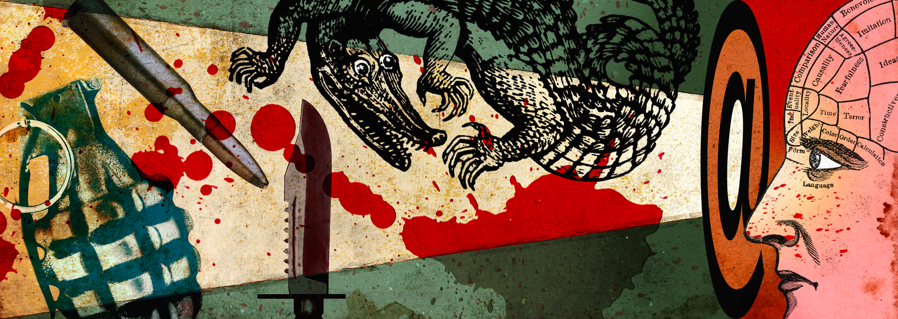

Exposure to traumatic content: ?
Facebook is a platform where users can share photos, videos, and stories about their lives. However, this also means that users can be exposed to traumatic content, such as violent videos or shocking images. Here are some key figures that illustrate the extent of this phenomenon.
Firstly, according to a survey conducted by Pew Research Center, 56% of Facebook users have seen shocking or offensive content on the platform. This can include images of violence, hate speech, online harassment, and other content that can be traumatic for users.
Additionally, a BBC investigation revealed that many violent contents were posted on Facebook despite the platform's efforts to remove them. The investigation found that extremist groups, terrorists, and criminals were using Facebook to disseminate videos of beheadings, images of torture, and other shocking content.
Furthermore, according to a study conducted by the University of California, Irvine, Facebook users who are exposed to violent or traumatic content tend to experience greater emotional distress. The study found that Facebook users who were exposed to violent images reported higher levels of anxiety, depression, and post-traumatic stress.
However, Facebook has implemented measures to combat exposure to traumatic content, such as the ability to report inappropriate content and the removal of violent or shocking content. Additionally, Facebook is working closely with authorities to combat extremist groups and violent content on the platform.
In conclusion, exposure to traumatic content is a common problem on Facebook, which can have negative consequences for users' mental health and well-being. Although Facebook has implemented measures to combat this phenomenon, it is important for users to be aware of the potential negative effects of exposure to traumatic content on Facebook and to take steps to protect their mental health and well-being.